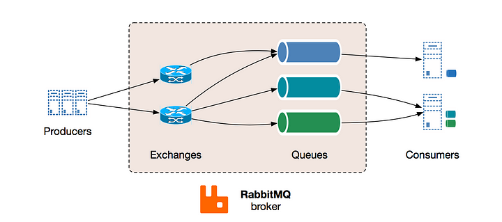

Message Queue
Table of Contents
1. Concepts
- Message queuing makes it possible for applications to communicate asynchronously, by sending messages to each other via a queue. A message queue provides temporary storage between the sender and the receiver so that the sender can keep operating without interruption when the destination program is busy or not connected. Asynchronous processing allows a task to call a service, and move on to the next task while the service processes the request at its own pace.
- A queue is a line of things waiting to be handled - in sequential order starting at the beginning of the line. A message queue is a queue of messages sent between applications. It includes a sequence of work objects that are waiting to be processed.
- A message is the data transported between the sender and the receiver applications; it's essentially a byte array with some headers on top. An example of a message could be an event. One application tells another application to start processing a specific task via the queue.
- The basic architecture of a message queue is simple; there are client applications called producers that create meessages and deliver them to the message queue. Another application, called a consumer, connects to the queue and gets the messages to be processed. Messages placed onto the queue are stored until the consumer retrieves them.
- The queue can provide protection from service outages and failures.
- Example of queues: Kafka, Heron, real-time streaming, Amazon SQS, and RabbitMQ.

2. Design user interface when MQ is involved
Dividing work between off-line work handled by a consumer and in-line work done by the web application depends entirely on the interface you are exposing to your users. Generally, you'll either:
- Perform almost no work in the consumer (merely scheduling a task) and inform your user that the task will occur offline, usually with a polling mechanism to update the interface once the task is complete (for example, provisioning a new VM on Slicehost follows this pattern), or
- perform enough work in-line to make it appear to the user that the task has completed, and tie up hanging ends afterward (posting a message on Twitter or Facebook likely follow this pattern by updating the tweet/message in your timeline but updating your followers's timelines out of the band; it's simple isn't feasible to update all the followers for a Scobleizer in real-time).
3. The role of message queuing in a microservice architecture
- In a microservice architecture, there are different functionalities divided across different services, that offer various functionalities. These services are coupled together to form a complete software application.
- Typically, in a microservice architecture, there are cross-dependencies, which entail that no single service can perform its functionalities without getting help from other services. This is where it's crucial for your system to have a mechanism in place which allows services to keep in touch with each other without getting blocked by responses.
- Message queuing fulfills this purpose by providing a means for services to push messages to a queue asynchronously and ensure that they get delivered to the correct destination. To implement a message queue between services, you need a message broker, think of it as a mailman, who takes mail from a sender and delivers it to the correct destination.
4. Message Broker - RabbitMQ

- RabitMQ is one of the most widely used message brokers, it acts as the message broker, "the mailman", a microservice architecture needs.
- RabbitMQ consists of:
- producer - the client that create a message
- consumer - receives a message
- queue - stores messages
- exchange - enables to route messages and send them to queues
- The system functions in the following way:
- producer creates a message and sends it to an exchange.
- exchange receives a message and routes it to queues subscribed to it
- consumer receives messages from those queues he/she is subscribed to.
Reference: https://medium.com/must-know-computer-science/system-design-message-queues-245612428a22
A message queue is a form of asynchronous service-to-service communication used in serverless and microservice architectures. Messages are stored on the queue until they are processed and deleted. Each message is processed only once, by a single consumer. Message queues can be used to decouple heavyweight processing, to buffer or batch work, and to smooth spiky workloads.
In modern cloud architecture, applications are decoupled into smaller, independent build blocks that are easier to develop, deploy and maintain. Message queues provide communication for these distributed applications. Message queues can significantly simplify coding of decoupled applications, while improving performance, reliability and scalability.
Message queues allow different parts of a system to communicate and process operations asynchronously. A message queue provides a lightweight buffer which temporarily stores messages, and endpoints that allow software components to connect to the queue in order to send and receive messages. The messages are usually small, and can be things like requests, replies, error messages, or just plain information. To send a message, a component called a producer adds a message to the queue. The message is stored on the queue until another component called a consumer retrieves the message and does something with it.

Many producers and consumers can use the queue, but each message is processed only once, by a single consumer. For this reason, this messaging pattern if often called one-to-one, or point-to-point, communications. When a message needs to be processed by more than one consumer, message queues can be combined with Pub/Sub messaging in a fanout design pattern. See https://aws.amazon.com/what-is/pub-sub-messaging/ for more details.